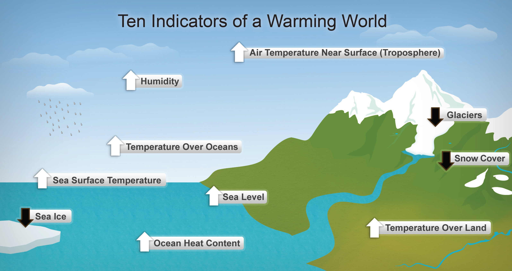
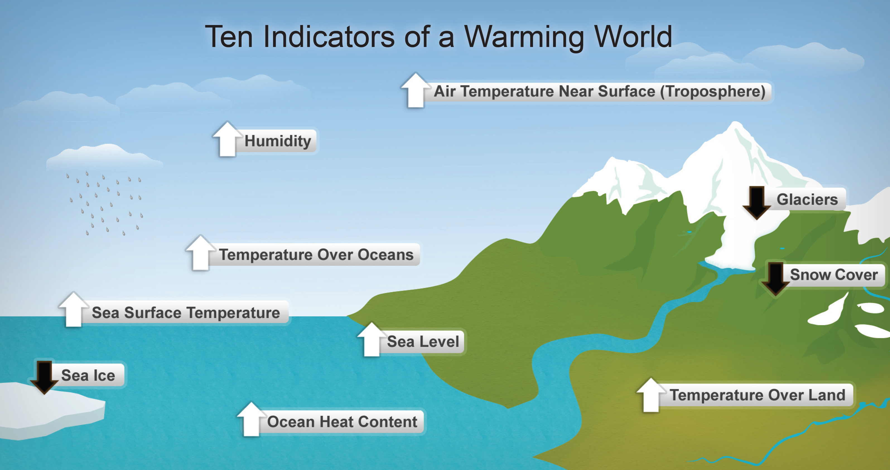

| Global Warming Statistics | ||
| Rise in the global average surface temperature since the late 19th century | 0.6°C | |
| Percent of climate scientists who believe global warming is being caused by humans | 90% | |
| Total rise in sea level over the past 100 years | 17.5 cm | Public Opinion | Percent of Americans who believe global warming is very real | 70% |
| Percent of Americans who believe global warming is not happening | 12% | |
| Percent of Americans who believe global warming is caused by mostly human activity | 54% | |
| Percent of Americans who say they are "somewhat" or "very worried" about global warming | 58% | |
| Percent of Americans who say they trust climate scientists as a source of information about global warming | 76% | |
Source: #PCC Synthesis Report, Yale/George Mason, National Geographic. 10/20/2012
 
